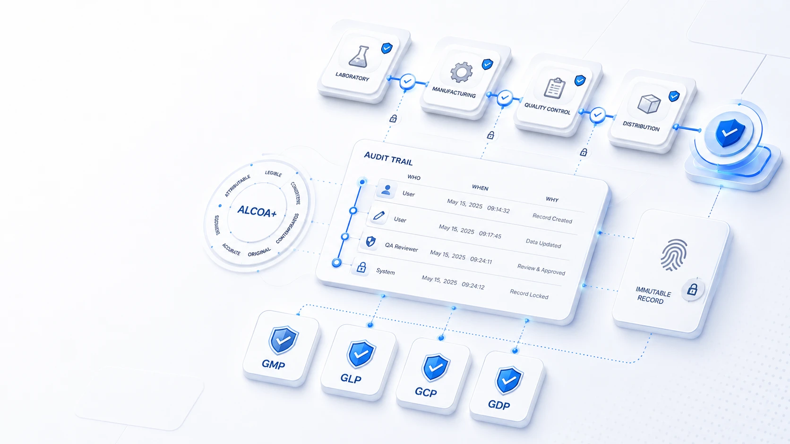

{{ g.title }}
{{ g.desc }}

GELİŞMİŞ YETENEKLER · 09 — GXP DOĞRULAMASI
GxP (GMP, GLP, GCP, GDP) üretim verisinin güvenilir ve izlenebilir olmasını isteyen kalite çerçevesidir. Tek soru: bir kayıt kimin, ne zaman, neden ürettiği belli ve yeniden inşa edilebilir mi? BSS sistemleri buna teknik altyapıyla cevap verir.

GXP NEDİR?
{{ g.desc }}
VERİ BÜTÜNLÜĞÜ · ALCOA+
ALCOA+, FDA, EMA, MHRA ve WHO'nun ortak kabul ettiği veri bütünlüğü çerçevesidir. Bir niteliğe tıklayın — BSS sistemlerinin o niteliği hangi teknik kontrolle desteklediğini görün.
{{ activeKey }} · {{ activeName }}
{{ activeReq }}
BSS SİSTEMİNDE
{{ activeBss }}
DENETİM İZİ
Her kayıt zaman damgası, kullanıcı ve önceki–sonraki değer ile saklanır. Değişiklik orijinali gizlemez; üzerine yazılmaz — yanına eklenir.
ÜRETİM GEÇMİŞİ · SERİ İZLENEBİLİRLİĞİ
Sevk edilen bir parti; hangi bobinden, hangi yarı mamulden, hangi istasyonlardan ve hangi operatörlerle geçtiği tek kayıt zincirinde durur. Bir şikâyet geldiğinde kök neden dakikalar içinde bulunur.
DÜRÜST ÇERÇEVE
Regülatörler, "uyumlu yazılım özellikleri"nin varlığını değil; kuruluşun veri üzerindeki kontrolünü, anlayışını ve gözetimini görmek ister. BSS, denetime hazır bir süreç için gereken teknik kontrolleri sağlar; kalite sistemi, prosedürler ve eğitim ise işletmenin sorumluluğundadır. İkisi birlikte çalıştığında sistem güvenilir olur.
{{ s.title }}
Not: BSS, belirli bir regülasyona (FDA 21 CFR Part 11, EU GMP Annex 11 vb.) "sertifikalıdır" iddiasında bulunmaz. Bu sayfa, sistemin veri bütünlüğü ilkelerini hangi teknik yeteneklerle desteklediğini kavramsal olarak anlatır; kesin uyum kapsamı her projede birlikte tanımlanır.